第06讲 难点探究专题：几何图形中的动态问题
第06讲 难点探究专题：几何图形中的动态问题
(5类热点题型讲练)

目录
【考点一 利用分类讨论思想解决几何图形中旋转多解问题】 1
【考点二 几何图形中动角求定值问题】 4
【考点三 几何图形中动角探究数量关系问题】 10
【考点四 几何图形中动角求运动时间问题】 16
【考点五 几何图形中动角之新定义型问题】 23

【考点一 利用分类讨论思想解决几何图形中旋转多解问题】
例题：（24-25七年级上·全国·期末）如图①，点O在直线 上，过O作射线
上，过O作射线
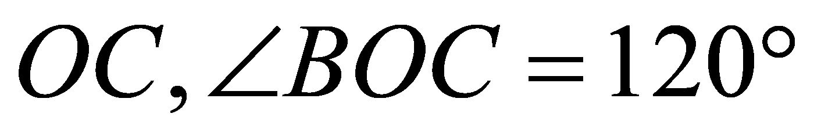
，三角板的顶点与点O重合，边 与
与 重合，边
重合，边 在直线的下方．若三角板绕点O按
在直线的下方．若三角板绕点O按 的速度沿逆时针方向旋转一周，在旋转的过程中，第
的速度沿逆时针方向旋转一周，在旋转的过程中，第  时，直线恰好平分锐角
时，直线恰好平分锐角 （图②）．
（图②）．
【变式训练】
1．（23-24七年级下·广东广州·期末）在同一平面内，将两副直角三角板的两个直角顶点重合，并摆成如图所示的形状．已知
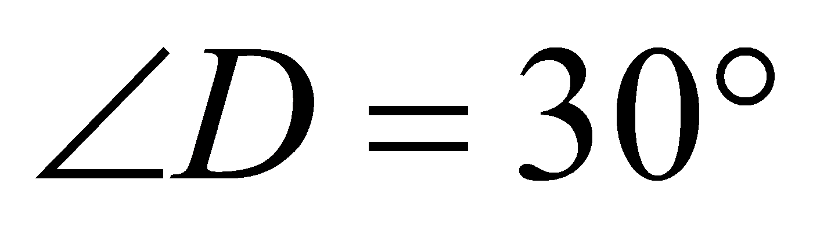
， ，
， ，若保持三角板
，若保持三角板 不动，将三角板
不动，将三角板 绕点A在平面内旋转．当
绕点A在平面内旋转．当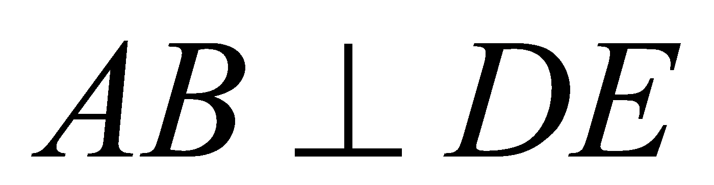
时，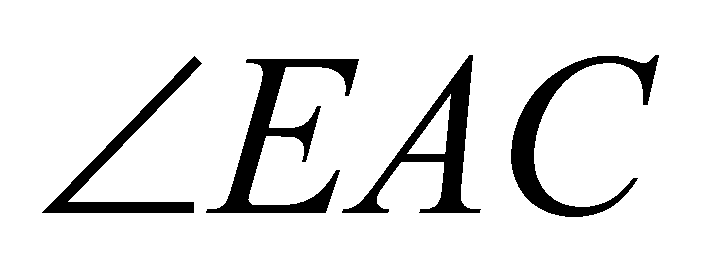
的度数为 ．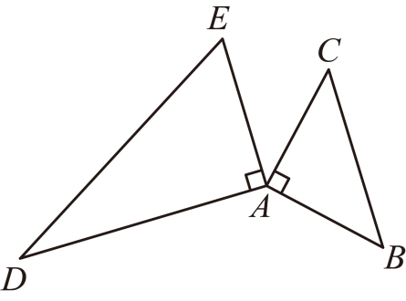
2．（23-24七年级下·天津和平·期中）在数学研究中，观察、猜想、实验验证、得出结论，是我们常用的几何探究方式．请你利用一副含有
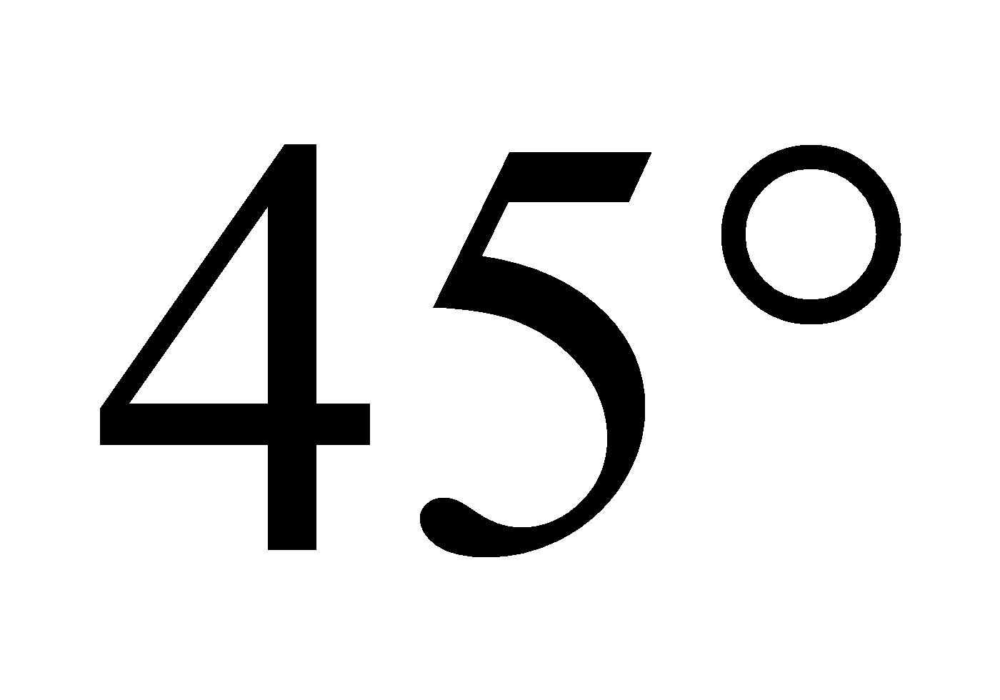
角的直角三角板和含有 角的直角三角板
角的直角三角板 尝试完成探究．试探索；保持三角板不动，将角的顶点与三角板的
尝试完成探究．试探索；保持三角板不动，将角的顶点与三角板的 角的顶点重合，然后摆动三角板，使得
角的顶点重合，然后摆动三角板，使得 与
与 中其中一个角是另一个角的两倍，请写出所有满足题意的的度数 ．
中其中一个角是另一个角的两倍，请写出所有满足题意的的度数 ．【考点二 几何图形中动角求定值问题】
例题：（23-24七年级下·辽宁鞍山·开学考试）在一次数学实践探究活动中，小明和他的同伴们将一个直角三角尺按如图所示方式放置，发现了其中的奥秘．
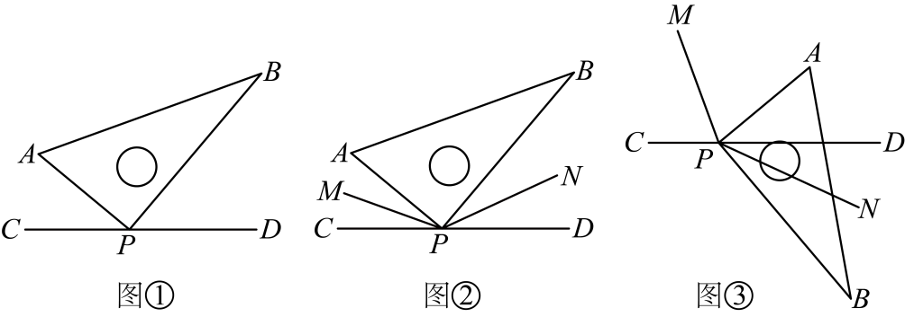
(1)如图①，三角尺
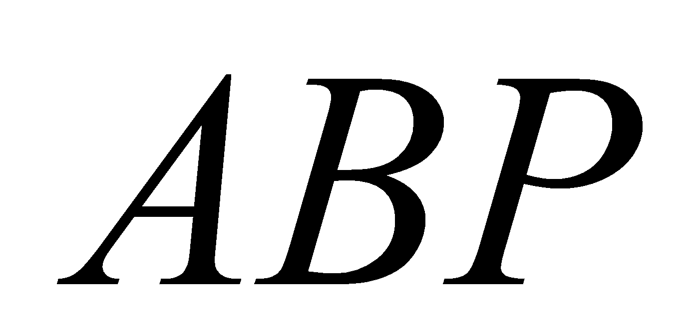
的直角顶点P在直线 上，点A，B在直线的同侧．若
上，点A，B在直线的同侧．若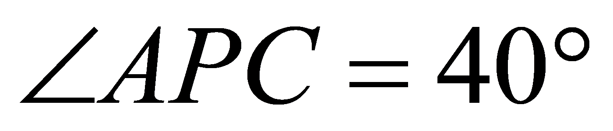
，求 度数．
度数．(2)绕点P旋转三角尺，使点A，B在直线的同侧，如图②，若 平分
平分 ，
， 平分，他们发现
平分，他们发现 的度数为定值，请你求出这个定值．
的度数为定值，请你求出这个定值．
(3)绕点P旋转三角尺，使点A，B在直线的异侧，平分，平分，设
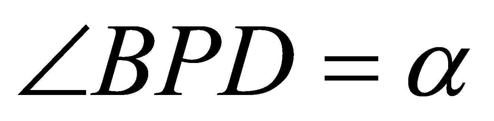
，如图③，探究的度数．【变式训练】
1．（23-24七年级上·江苏徐州·期末）已知
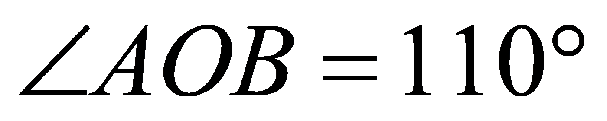
，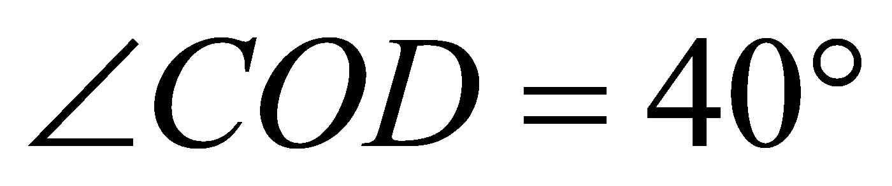
． 平分
平分 ，
， 平分
平分 ．
．
(1)如图①，当
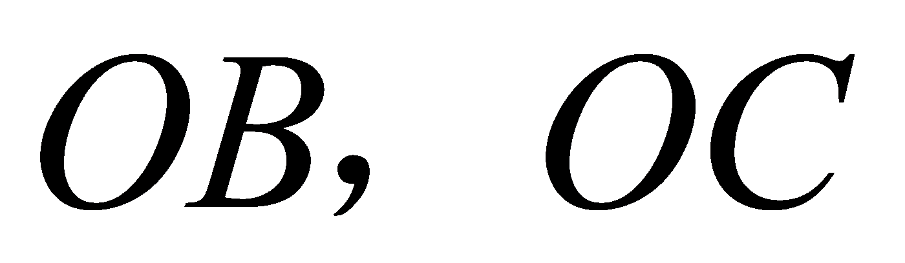
重合时，求 的值；
的值；(2)当 从图①所示位置绕点O以每秒
从图①所示位置绕点O以每秒
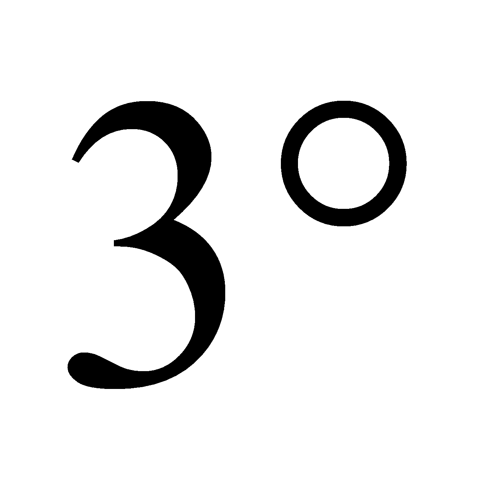
的速度顺时针旋转t秒（ ）；在旋转过程中的值是否会因t的变化而变化，若不发生变化，请求出该定值；若发生变化，请说明理由．
）；在旋转过程中的值是否会因t的变化而变化，若不发生变化，请求出该定值；若发生变化，请说明理由．2．（23-24七年级下·陕西榆林·开学考试）【问题情境】已知， ，，平分，平分．
，，平分，平分．
【特例分析】（1）如图1，当 、
、 重合时，求的值；
重合时，求的值；
【深入探究】（2）如图2，当、不重合，在的下方时，设 ， 的值是否会因为x的变化而变化? 若不发生变化，请求出该定值；若发生变化，请说明理由；
， 的值是否会因为x的变化而变化? 若不发生变化，请求出该定值；若发生变化，请说明理由；
【问题解决】（3）在（2）的条件下，当 时，求
时，求 的度数.
的度数.
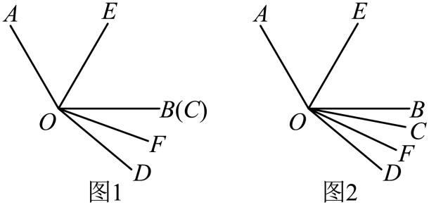
3．（23-24七年级上·广东汕头·期末）如图， ，
， 角的顶点
角的顶点 互相重合，将
互相重合，将 绕点旋转．
绕点旋转．
(1)当射线， 重合时，
重合时， ______
______ ，
，
(2)在绕点旋转的过程中，若射线，与中的某一条射线是另两条射线所夹角的角平分线，则的度数为______；
(3)在绕点旋转的过程中，若射线始终在 的内部．
的内部．
①普于思考的小明发现，在旋转过程中， 的值为定值，请你求出这个定值；
的值为定值，请你求出这个定值；
②作和 的平分线
的平分线 ，
， ，在旋转过程中
，在旋转过程中
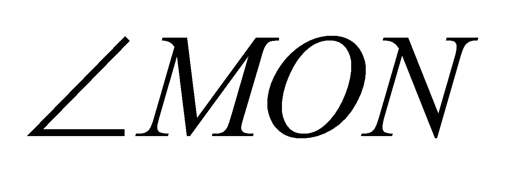
的值是否发生变化？若不变，请求出这个定值，若变化，请求出变化的范围．【考点三 几何图形中动角探究数量关系问题】
例题：（23-24七年级上·吉林·期末）已知 ，平分
，平分 ．
．

(1)如图，若 ，则的度数是______；（直接写出答案）
，则的度数是______；（直接写出答案）
(2)将（1）中的条件“”改为“是锐角”，猜想与的关系，并说明理由．
【变式训练】
1．（23-24六年级下·山东烟台·期中）如图， ，请你根据图形，求解下列问题：
，请你根据图形，求解下列问题：
(1)在 中，哪些角是锐角？哪些角是直角？哪些角是钝角？哪些角是平角？并用“
中，哪些角是锐角？哪些角是直角？哪些角是钝角？哪些角是平角？并用“ ”把它们连接起来；
”把它们连接起来；
(2)是哪两个角的和？
(3)写出
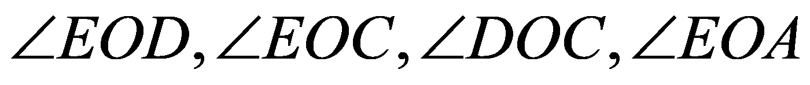
中某些角之间的两个等量关系；(4)如果 ，则的度数为_________．
，则的度数为_________．
2．（2024七年级上·河北·专题练习）已知O为直线 上一点，射线
上一点，射线
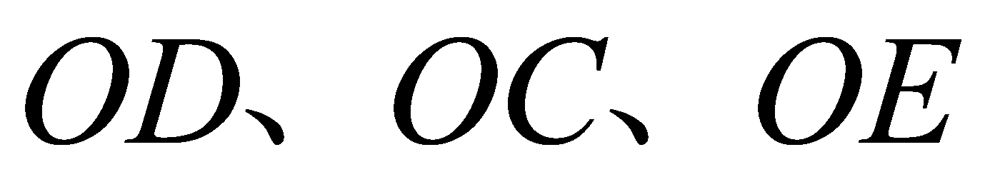
位于直线上方，在的左侧， ，
， ．
．
(1)如图1，当平分时，求 的度数；
的度数；
(2)点F在射线上，若射线绕点O逆时针旋转
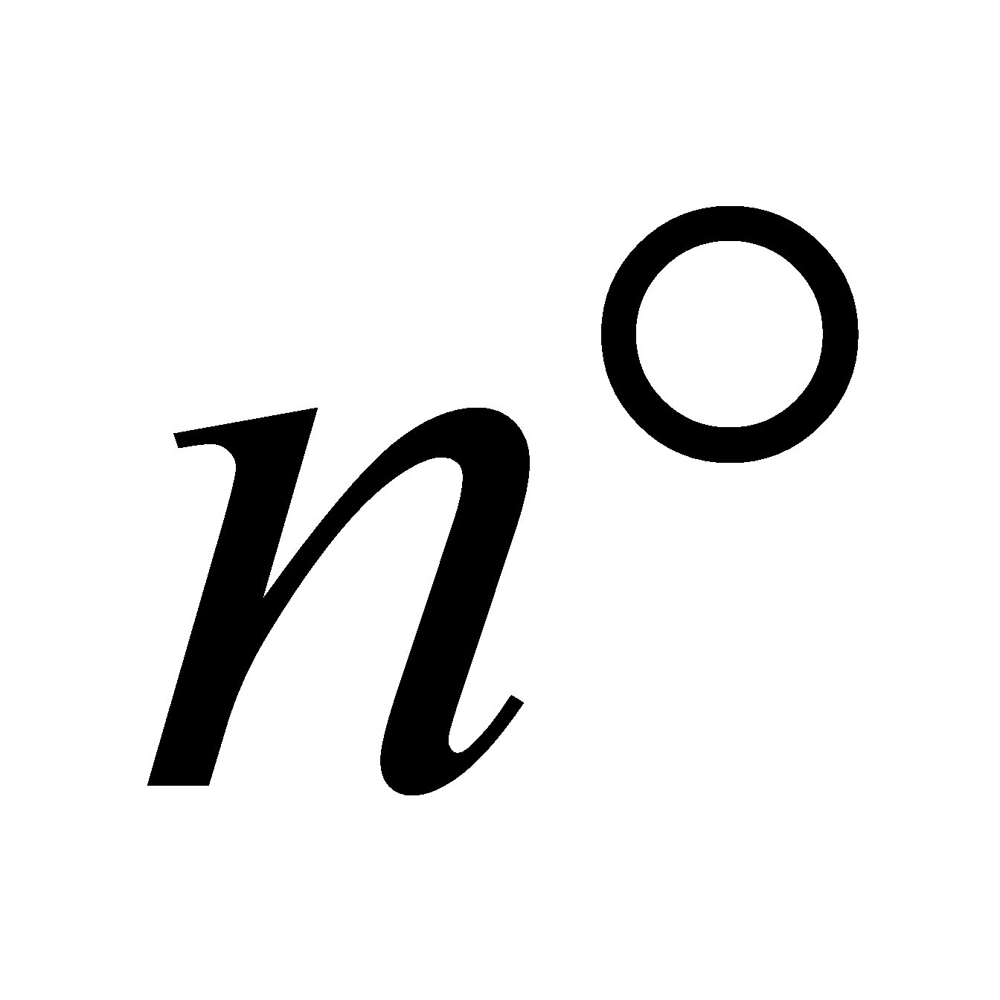
（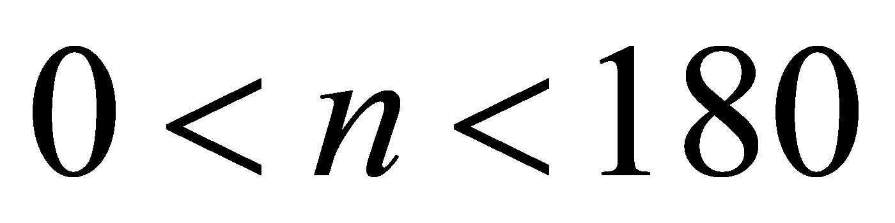
且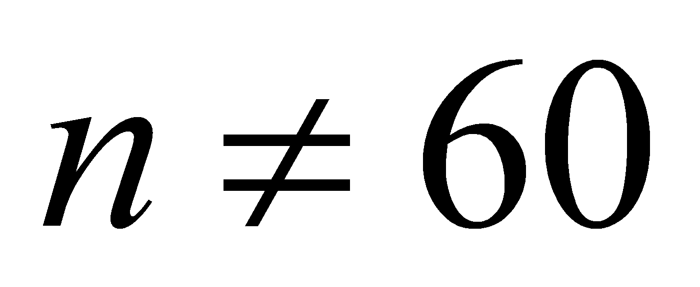
）， ．当在内部（图2）和的两边在射线的两侧（图3）时，
．当在内部（图2）和的两边在射线的两侧（图3）时，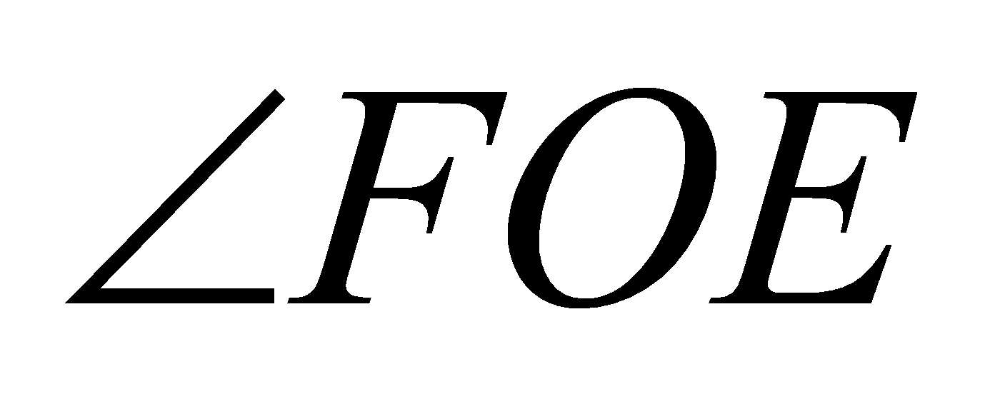
和 的数量关系是否改变，若改变，说明理由，若不变，求出其关系．
的数量关系是否改变，若改变，说明理由，若不变，求出其关系．3．（23-24七年级上·福建福州·期末）如图 ，将一副三角板的直角顶点
，将一副三角板的直角顶点 叠放在一起．
叠放在一起．

(1)观察分析∶若
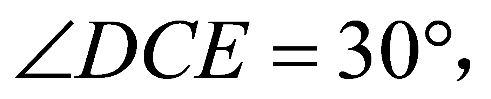
则 ，若
，若 则
则 ；
；(2)猜想探究∶如图 ，若将两个同样的三角尺，
，若将两个同样的三角尺， 锐角的顶点
锐角的顶点 重合在一起，请你猜想
重合在一起，请你猜想
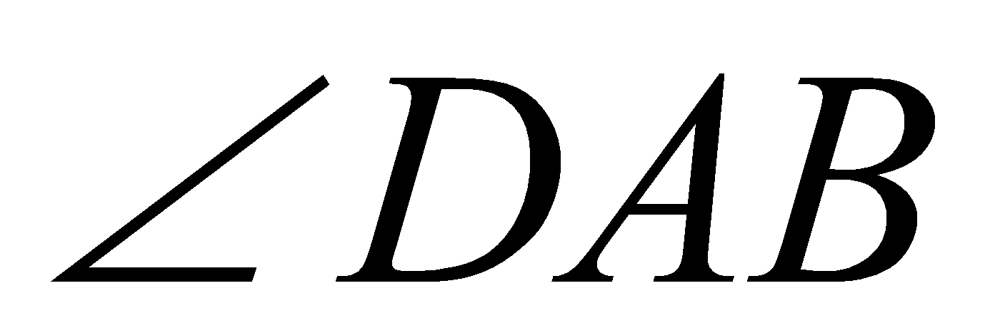
与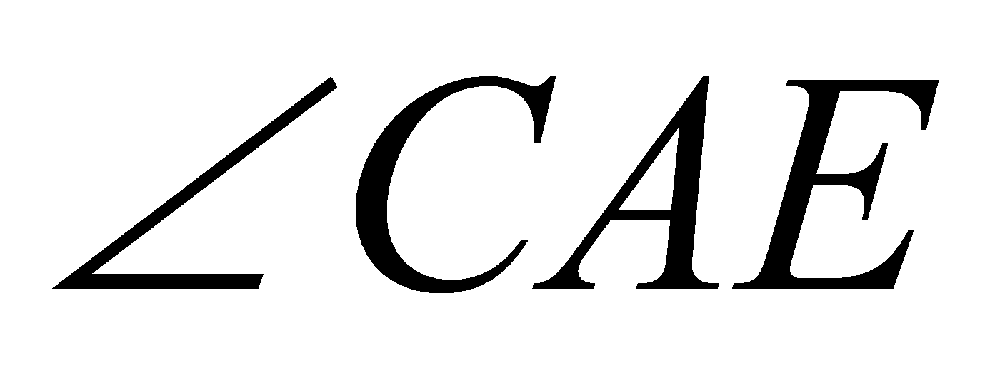
有何关系，请说明理由；(3)拓展应用∶如图 ，如果把任意两个锐角
，如果把任意两个锐角 的顶点重合在一起，已知
的顶点重合在一起，已知 ，
， （
（ 、
、 都是锐角），请你直接写出
都是锐角），请你直接写出 与的关系．
与的关系．
4．（23-24七年级上·江苏苏州·期末）数学实践课上，小明同学将直角三角板 的直角顶点O放在直尺
的直角顶点O放在直尺 的边缘，将直角三角板绕着顶点O旋转．
的边缘，将直角三角板绕着顶点O旋转．
(1)若三角板在的上方，如图1所示．在旋转过程中，小明发现、 的大小发生了变化，但它们的和不变，即
的大小发生了变化，但它们的和不变，即 ______°．
______°．
(2)若 、分别位于的上方和下方，如图2所示，则、之间的上述关系还成立吗？若不成立，则它们之间有怎样的数量关系？请说明你的理由；
、分别位于的上方和下方，如图2所示，则、之间的上述关系还成立吗？若不成立，则它们之间有怎样的数量关系？请说明你的理由；
(3)射线、分别是、的角平分线，若三角板始终在的上方，则旋转过程中，的度数是一个定值吗？若是，请求出这个定值；若不是，请说明理由．
【考点四 几何图形中动角求运动时间问题】
例题：（23-24六年级下·黑龙江哈尔滨·期末）在数学实验课中，学生进行操作探究，用一副三角板（其中 ，
， ，
， ，
，
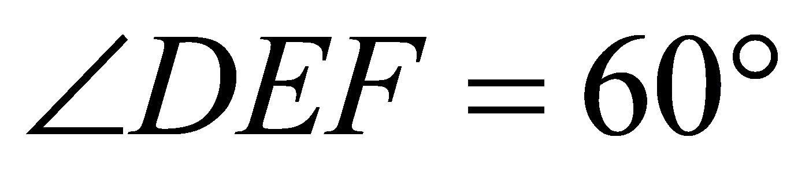
）按如图1所示摆放，边 与在同一条直线
与在同一条直线 上（点C与点E重合）．如图2，将三角板
上（点C与点E重合）．如图2，将三角板 从图1的位置开始绕点C以每秒
从图1的位置开始绕点C以每秒 的速度顺时针旋转，当边与边重合时停止运动，设三角板的运动时间为t秒．
的速度顺时针旋转，当边与边重合时停止运动，设三角板的运动时间为t秒．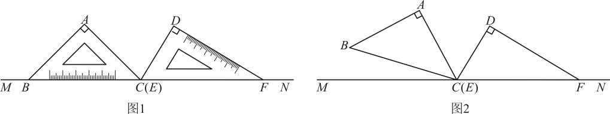
(1)当t为何值时， 平分
平分 ？
？
(2)当t为何值时， ？
？
【变式训练】
1．（23-24七年级上·安徽合肥·期末）如图，为线段AB上一点， ，
， 为的角平分线，定义
为的角平分线，定义 与
与 重合时为初始位置，将绕着点从初始位置开始，以
重合时为初始位置，将绕着点从初始位置开始，以 秒的速度顺时针旋转，至
秒的速度顺时针旋转，至 与重合时终止．
与重合时终止．
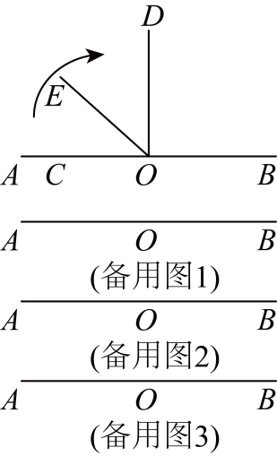
(1)当从初始位置旋转 秒，求此时的度数；
秒，求此时的度数；
(2)当从初始位置旋转至 时，求此时
时，求此时 的值；
的值；
(3)当从初始位置旋转至
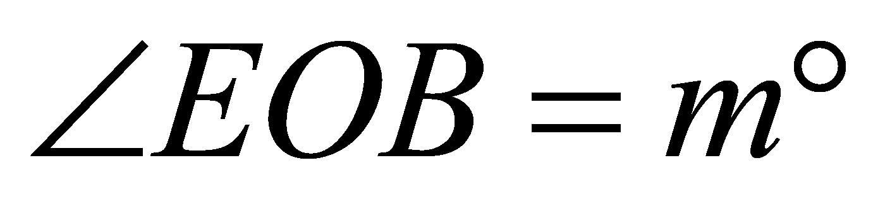
时， __________秒（用含有m的代数式直接表示）．
__________秒（用含有m的代数式直接表示）．2．（23-24七年级上·福建厦门·期末）【实践操作】三角尺中的数学
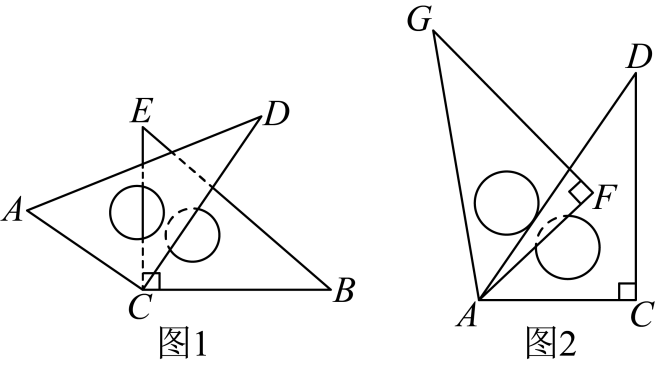
(1)如图1，将两块三角尺的直角顶点C叠放在一起， ．
．
①若 ，则 ；若
，则 ；若
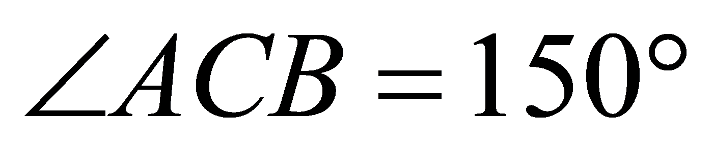
，则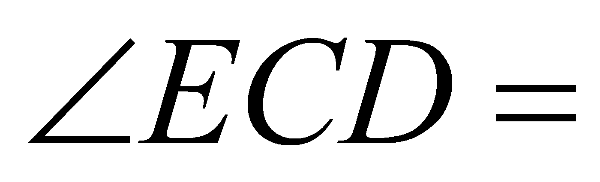
；②猜想 与
与 的大小有何数量关系，并说明理由．
的大小有何数量关系，并说明理由．
(2)如图2，若是将两个同样的含锐角的直角三角尺叠放在一起，其中锐角的顶点A重合在一起，
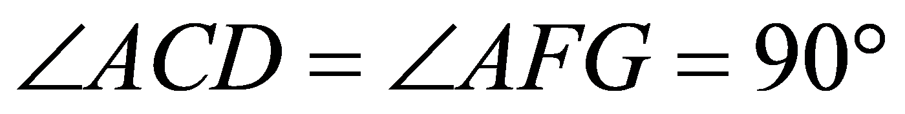
．①探究
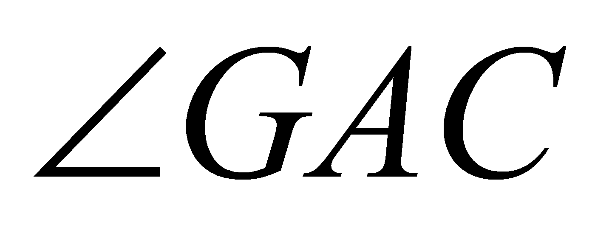
与 的大小有何数量关系，并说明理由；
的大小有何数量关系，并说明理由；②若一开始就将 与
与
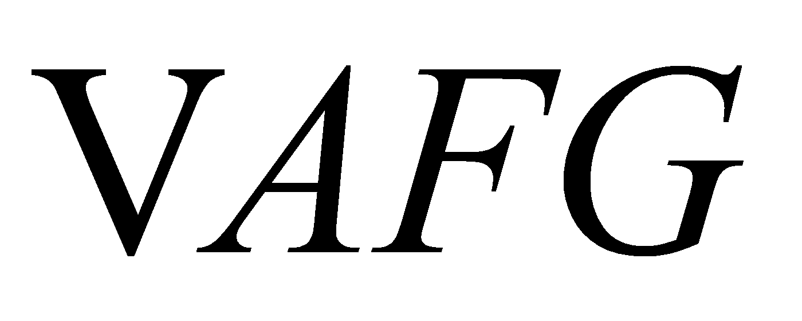
完全重合（ 与
与 重合），保持不动，将绕点A以每秒
重合），保持不动，将绕点A以每秒 的速度逆时针旋转一周，旋转时间为t．在旋转的过程中，t为何值时
的速度逆时针旋转一周，旋转时间为t．在旋转的过程中，t为何值时 ．
．3．（24-25七年级上·全国·单元测试）如图①，把一副三角板拼在一起，边 与直线重合，其中
与直线重合，其中 ，
， ．此时易得
．此时易得 ．
．
(1)如图②，三角板 固定不动，将三角板绕点O以每秒的速度顺时针开始旋转，在转动过程中，三角板一直在
固定不动，将三角板绕点O以每秒的速度顺时针开始旋转，在转动过程中，三角板一直在 的内部，设三角板运动时间为t秒．
的内部，设三角板运动时间为t秒．
①当 时，
时， ；
；
②当t为何值时， ？
？
(2)如图③，在（1）的条件下，若平分
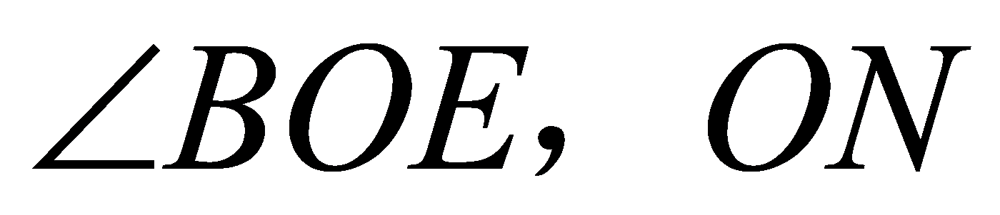
平分．①当 时，
时， ；
；
②请问在三角板的旋转过程中，的度数是否会发生变化？如果发生变化，请说明理由；如果不发生变化，请求出的度数．
【考点五 几何图形中动角之新定义型问题】
例题：（23-24七年级上·陕西汉中·期末）【问题背景】如图1，已知射线在的内部，若，和三个角中有一个角的度数是另一个角度数的两倍，则称射线是的“量尺金线”．
【问题感知】
（1）一个角的平分线________这个角的“量尺金线”；（填“是”或“不是”）
【问题初探】
（2）如图2，
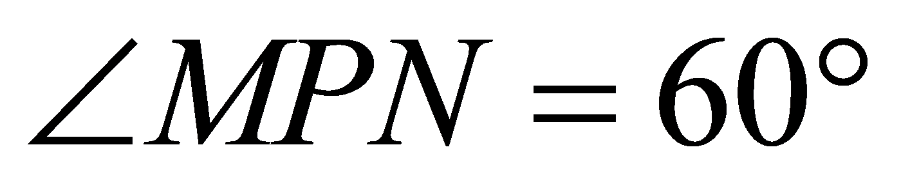
．若射线 是的“量尺金线”，则
是的“量尺金线”，则 的度数为________；
的度数为________；【问题推广】
（3）在（2）中，若 ，
，
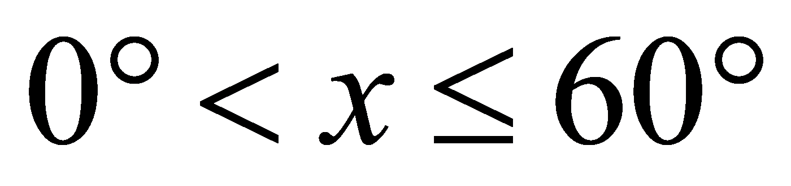
，射线 从位置开始，以每秒旋转
从位置开始，以每秒旋转 的速度绕点P按逆时针方向旋转，当
的速度绕点P按逆时针方向旋转，当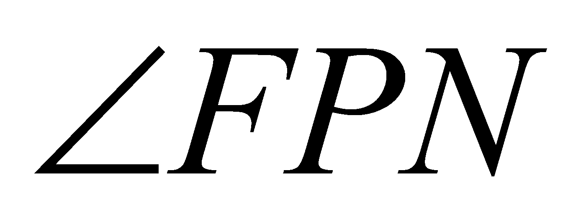
首次等于 时停止旋转，设旋转的时间为
时停止旋转，设旋转的时间为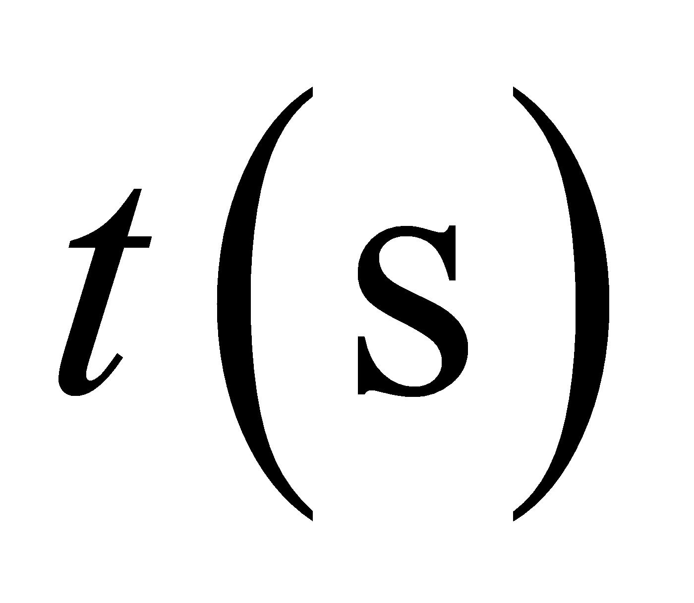
．当t为何值时，射线是的“量尺金线”？（用含x的式子表示出t即可）【变式训练】
1．（23-24七年级上·辽宁葫芦岛·期末）【问题初探】
在一个角的内部，从顶点画一条射线，得到三个角，若其中有一个角是另一个角的倍，则称这条射线是已知角的“奇妙线”．
例如：图中 ，则射线是的“奇妙线”．
，则射线是的“奇妙线”．
（1）一个角的角平分线______这个角的“奇妙线”；（填“是”或“不是”）
【类比分析】
（2）如图，若，在内部画一条射线，使是的“奇妙线”，求 的度数；
的度数；
【变式拓展】
（3）如图，若，且射线绕点 从位置开始以每秒的速度逆时针旋转，同时射线以每秒
从位置开始以每秒的速度逆时针旋转，同时射线以每秒
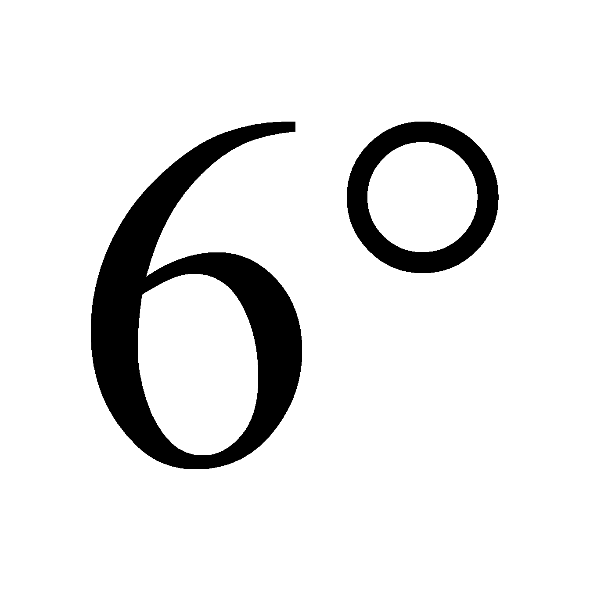
的速度也绕点逆时针旋转，当射线与射线重合时全部停止运动．设旋转时间为秒，请直接写出为何值时，射线是的“奇妙线”．
2．（2023七年级上·全国·专题练习）[阅读理解]定义：在一条直线同侧的三条具有公共端点的射线之间若满足以下关系，其中一条射线分别与另外两条射线组成的角恰好满足2倍的数量关系，则称该射线是另外两条射线的“双倍和谐线”，如图1，点P在直线l上，射线 ，
， ，
， 位于直线l同侧，若平分
位于直线l同侧，若平分
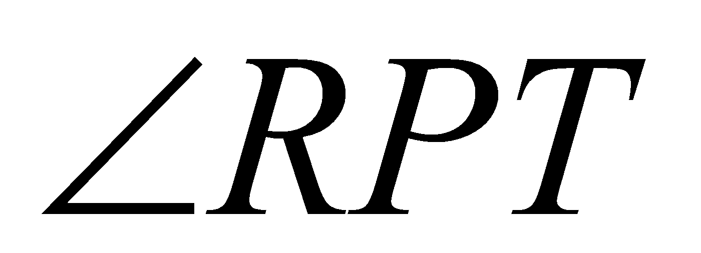
，则有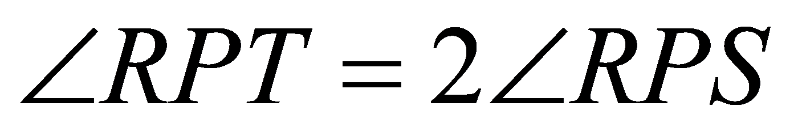
，所以我们称射线是射线，的“双倍和谐线”．
[迁移运用]
(1)如图1，射线_____（选填“是”或“不是”）射线，的“双倍和谐线”；射线_____（选填“是”或“不是”）射线，的“双倍和谐线”；
(2)如图2，点O在直线上， ，
， ，射线从出发，绕点O以每秒
，射线从出发，绕点O以每秒 的速度逆时针旋转，运动时间为t秒，当射线与射线重合时，运动停止．
的速度逆时针旋转，运动时间为t秒，当射线与射线重合时，运动停止．
①当射线是射线，的“双倍和谐线”时，求t的值；
②若在射线旋转的同时，绕点O以每秒 的速度逆时针旋转，且在旋转过程中，射线平分，当射线位于射线左侧且射线是射线，的“双倍和谐线”时，求
的速度逆时针旋转，且在旋转过程中，射线平分，当射线位于射线左侧且射线是射线，的“双倍和谐线”时，求 的度数．
的度数．